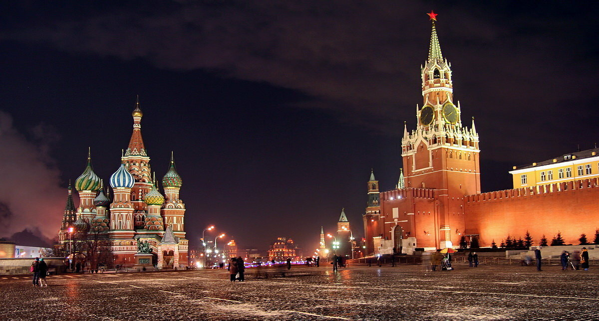

Красная площадь
Красная площадь
История создания:
Красная площадь в Москве — одна из ключевых достопримечательностей столицы, вместе с Московским Кремлём включенная в список объектов Всемирного наследия ЮНЕСКО.
История площади насчитывает более пяти веков. Она появилась в конце XV века, когда по велению великого князя Ивана III была построена восточная стена Московского Кремля. 2 Первоначально площадь называлась Торг, в XVI веке — Троицкая площадь, а со второй половины XVII века — Красная (красивая).
Современная Красная площадь — огромное пешеходное пространство, протянувшееся вдоль северо-восточной стены Кремля. Площадь полностью вымощена брусчаткой из крымского долерита и используется для прогулок горожан и туристов, а также проведения крупных массовых мероприятий: парадов, концертов и фестивалей.
Некоторые достопримечательности Красной площади:
Исторический музей. Один из крупнейших и интереснейших музеев мира, который представляет историю страны от самых древних времён до XX столетия.
Воскресенские ворота. Сохранившаяся до наших времён памятка представляет собой часть Китайгородской стены, которая защищала Москву от нашествий захватчиков.
Казанский собор. Храм, названный в честь Казанской иконы Божьей Матери, был уничтожен большевиками, а позже полностью восстановлен.
Лобное место. Участок на площади напротив Спасских ворот, впервые упомянутый в летописи в 1549 году, когда царь Иван Грозный произнёс здесь речь перед москвичами.
Собор Покрова Пресвятой Богородицы на Рву (Храм Василия Блаженного). Храм сооружён по велению Ивана Грозного в честь покорения Казани.
Памятник Кузьме Минину и Дмитрию Пожарскому. Бронзовый постамент, возведённый рядом с собором Василия Блаженного, посвящён героям-освободителям, которые в конце XVI — начале XVII века возглавили народное ополчение и помогли россиянам одержать победу над польскими захватчиками.
Общая длина Красной площади — 330 метров, ширина — 75 метров, площадь — 24 750 м².